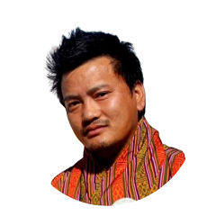

|  | Namgay DorjiI am from Bhutan, learning The Complete 2022 Web Development Bootcamp via Udemy free course. Under good guidance from my fantastic Lecture Dr. Angela Yu from London, App Brewery Company. I am a App and Web Developer traine and I ❤️ butter tea "SUJA", "MOMO" & "NOODLES" I am a DESUUP👮. The 5th King initiated military-style training for volunteers known as the DeSuung Training Programme, DeSuung meaning "Guardians of Peace",in 2011, on the request of the youth. The programme aims to equip volunteers with the skill to provide assistance during emergencies, and has been hugely successful, with more than 2011 with 3000 and 27,888 as of 2022 volunteers having completed their training and volunteering for public events and emergencies.Graduates of the program are known as DeSuups and wear orange jumpsuits.They live by the DeSuung Honour Code, which is to "keep service to their nation before their own safety and comfort" |
| Date | Works |
|---|---|
| 2000 - 2003 | Completed my Electrical Engineering Course from Royal Technical Institute, Bhutan |
| 2004 - 2006 | Diploma in IT & Broadband Technology from CETTM Mumbai India |
| 2006 - 2019 | Worked as Senior Technical Officer in Bhutan Telecom Limited Bhutan ISP |
| 2020 - 2022 | Became a Desuup, Desuung Bhutan |
| 2022 | Undergoing (Desuung Skilling Programme)DSP Training, App Developer and Udemy Course at BETA ParkThimphu Bhutan |
| Electrical and Estimation & Costing | ⭐⭐⭐⭐⭐ |
| Broadband Technology | ⭐⭐⭐⭐⭐ |
| Optical Fiber & Splicing Technology | ⭐⭐⭐⭐⭐ |
| Radio and Internet | ⭐⭐⭐⭐ |
| Web Desigining | ⭐⭐⭐ |
| App Developer | ⭐⭐ |
| Photography & Driving | ⭐⭐⭐⭐⭐ |